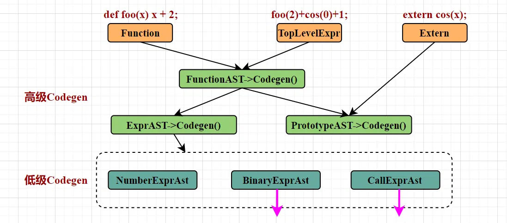

# 前言
本篇是使用 llvm 编译自定义语言的第三篇。第一篇【编译器】使用 llvm 编译自定义语言【1】构建 AST 文章自顶向下介绍了抽象语法树 AST 的构建过程，第二篇【编译器】使用 llvm 编译自定义语言【2】转 llvm IR 文章介绍将抽象语法树 AST 转化为 llvm IR 的过程。本篇将简单介绍，如何将前述得到的 llvm IR 编译成 Object 。所使用代码例子来自 LLVM 官方教程 My First Language Frontend with LLVM Tutorial。
本篇介绍无法代替官方教程，感兴趣请参考 My First Language Frontend with LLVM Tutorial。
作为初学者，错误在所难免，还望不吝赐教。
# 目标
再回忆一下顶级 Item 转换为 llvm IR 的过程，三种顶级 Item：函数 Function、外部函数 Extern、顶级表达式 TopLevelExpr。官方例子已经把这三种顶级 item 全部经过 Codegen 转换成 llvm IR 中的 Function。

函数 Function 自然是转换为 llvm::Function ，顶级表达式 TopLevelExpr 转换为匿名原型 prototype 的 llvm::Function ，外部函数 Extern 转换为没有表达式 body 的 llvm::Function 。总之，前述介绍将所有顶级 Item 转换为了 llvm::Function 。
所以本篇内容的目的是，介绍如何将 llvm::Function 编译成 Object，进而执行的过程。
# 编译 Object
下面是一个将 llvm::Function 编译成 Object 的例子，实现 Hello World 的输出。前述流程已经到达 llvm::Function 这一步，为了避免复杂的 Lexer、AST、Codegen 的干扰而分散注意力，以下代码仅展示从 llvm::Function 开始编译成 Object 的流程。
#include "llvm/IR/LLVMContext.h" | |
#include "llvm/IR/Module.h" | |
#include "llvm/IR/IRBuilder.h" | |
#include "llvm/IR/Verifier.h" | |
#include "llvm/Support/raw_ostream.h" | |
#include "llvm/Support/TargetSelect.h" | |
#include "llvm/Target/TargetMachine.h" | |
#include "llvm/Target/TargetOptions.h" | |
#include "llvm/CodeGen/TargetPassConfig.h" | |
#include "llvm/MC/TargetRegistry.h" | |
#include "llvm/IR/LegacyPassManager.h" | |
#include "llvm/Linker/Linker.h" | |
#include "llvm/Transforms/InstCombine/InstCombine.h" | |
#include "llvm/Transforms/Scalar.h" | |
#include "llvm/Transforms/Scalar/GVN.h" | |
#include <iostream> | |
#include <memory> | |
#include <optional> | |
#include "llvm/Support/FileSystem.h" | |
using namespace llvm; | |
int main() { | |
// 创建一个 LLVMContext 实例 | |
LLVMContext Context; | |
// 创建一个 Module 实例，关联到 Context | |
std::unique_ptr<Module> M = std::make_unique<Module>("MyModule", Context); | |
// 创建一个 IRBuilder 实例，关联到 Context | |
IRBuilder<> Builder(Context); | |
// 声明 puts 函数 | |
FunctionType *PutsFT = FunctionType::get( | |
IntegerType::getInt32Ty(Context), {PointerType::getUnqual(IntegerType::getInt8Ty(Context))}, false); | |
Function *PutsF = Function::Create(PutsFT, Function::ExternalLinkage, "puts", M.get()); | |
// 创建一个全局字符串常量 "Hello, World" | |
Constant *HelloStr = ConstantDataArray::getString(Context, "Hello, World", true); | |
GlobalVariable *HelloGV = new GlobalVariable( | |
*M, HelloStr->getType(), true, GlobalValue::InternalLinkage, HelloStr, "hello"); | |
// 获取字符串的地址 | |
Constant *Zero = ConstantInt::get(IntegerType::getInt32Ty(Context), 0); | |
std::vector<Constant *> Indices = {Zero, Zero}; | |
Constant *HelloPtr = ConstantExpr::getGetElementPtr(HelloStr->getType(), HelloGV, Indices); | |
// 创建 main 函数类型 | |
FunctionType *MainFT = FunctionType::get(IntegerType::getInt32Ty(Context), false); | |
Function *MainF = Function::Create(MainFT, Function::ExternalLinkage, "main", M.get()); | |
// 创建一个基本块 | |
BasicBlock *BB = BasicBlock::Create(Context, "entry", MainF); | |
// 设置 IRBuilder 的插入位置 | |
Builder.SetInsertPoint(BB); | |
// 调用 puts 函数输出字符串 | |
Builder.CreateCall(PutsF, {HelloPtr}); | |
// 生成一个返回指令 | |
Builder.CreateRet(ConstantInt::get(IntegerType::getInt32Ty(Context), 0)); | |
// 验证模块 | |
if (verifyModule(*M, &errs())) { | |
errs() << "Module verification failed!\n"; | |
return 1; | |
} | |
// 初始化目标选择 | |
InitializeAllTargetInfos(); | |
InitializeAllTargets(); | |
InitializeAllTargetMCs(); | |
InitializeAllAsmParsers(); | |
InitializeAllAsmPrinters(); | |
// 获取目标信息 | |
std::string TargetTriple = "x86_64-pc-linux-gnu"; | |
M->setTargetTriple(TargetTriple); | |
std::string Error; | |
const Target *TheTarget = TargetRegistry::lookupTarget(TargetTriple, Error); | |
if (!TheTarget) { | |
errs() << Error; | |
return 1; | |
} | |
// 设置目标选项 | |
TargetOptions Opts; | |
std::optional<Reloc::Model> RM; | |
TargetMachine *TM = TheTarget->createTargetMachine( | |
TargetTriple, "generic", "", Opts, RM); | |
M->setDataLayout(TM->createDataLayout()); | |
// 创建文件输出流 | |
std::error_code EC; | |
raw_fd_ostream dest("output.o", EC, sys::fs::OpenFlags::OF_None); | |
if (EC) { | |
errs() << "Could not open file: " << EC.message(); | |
return 1; | |
} | |
// 创建一个传递管理器 | |
legacy::PassManager PM; | |
PM.add(createInstructionCombiningPass()); | |
PM.add(createReassociatePass()); | |
PM.add(createGVNPass()); | |
PM.add(createCFGSimplificationPass()); | |
// 生成目标文件 | |
if (TM->addPassesToEmitFile(PM, dest, nullptr, CodeGenFileType::ObjectFile)) { | |
errs() << "TargetMachine can't emit a file of this type"; | |
return 1; | |
} | |
// 运行传递管理器 | |
PM.run(*M); | |
dest.flush(); | |
std::cout << "Object file generated: output.o" << std::endl; | |
return 0; | |
} |
运行方式：
/home/user/your/path/of/llvm/bin/clang++ -std=c++17 -fPIE HelloWorld.cpp `/home/user/your/path/of/llvm/bin/llvm-config --cxxflags --ldflags --system-libs --libs all` -o generate_ir | |
./generate_ir | |
clang++ output.o -o run.x | |
./run.x |
通过以上命令编译代码，获取可执行文件 generate_ir 。执行可执行文件后输出编译结果 output.o ，最后编译和运行，能够输出 Hello, World！
# 代码解释
代码的详细解释可以看代码注释。这里只增添一些其他信息。
LLVMContext、Module 和 IRBuilder 是构建和操作 LLVM 中间表示（IR）的核心类。
LLVMContext 是 LLVM 库中最基础的类，它代表了一个独立的 LLVM 执行环境，负责管理 LLVM IR 中所有类型、常量和其他元数据的内存。
Module 表示一个完整的编译单元，类似于一个源文件编译后的结果。作为一个全局的容器，Module 包含了所有的全局变量、函数定义和声明。
IRBuilder 是一个用于生成 LLVM IR 指令的辅助类。提供了一系列的方法来创建各种 LLVM IR 指令，如算术运算、控制流指令等。
代码中还有一个 BasicBlock（基本块）的概念，它在很多场景下都需要被创建。BasicBlock 是一组顺序执行的指令序列，具有单一的入口和单一的出口。这意味着基本块内的指令会按照顺序依次执行，不会有分支跳转到基本块内部的中间位置，并且基本块的末尾通常是一条跳转指令（如 br 指令），用于控制程序流的转移。
什么时候需要创建基本块？
1. 创建函数时
当创建一个新的函数时，函数体需要由基本块组成。通常，函数至少需要一个入口基本块，用于开始执行函数的代码。比如代码中的 “main” 函数。
2. 实现控制流时
当程序中存在控制流语句（如 if-else、for 循环、while 循环等）时，需要创建多个基本块来表示不同的执行路径。
比如下面是一个简单的 while 循环示例，实现一个变量从 0 递增到 10 的过程。总之，创建 BasicBlock 主要是为了组织函数的执行逻辑，处理控制流语句和循环结构。
// 创建一个函数 | |
FunctionType *FT = FunctionType::get(Builder.getInt32Ty(), {Builder.getInt32Ty()}, false); | |
Function *F = Function::Create(FT, Function::ExternalLinkage, "test_if", M.get()); | |
Argument *Arg = &*F->arg_begin(); | |
// 创建入口基本块 | |
BasicBlock *EntryBB = BasicBlock::Create(Context, "entry", F); | |
// 创建条件为真时执行的基本块 | |
BasicBlock *TrueBB = BasicBlock::Create(Context, "true", F); | |
// 创建条件为假时执行的基本块 | |
BasicBlock *FalseBB = BasicBlock::Create(Context, "false", F); | |
// 创建合并基本块 | |
BasicBlock *MergeBB = BasicBlock::Create(Context, "merge", F); | |
Builder.SetInsertPoint(EntryBB); | |
// 比较操作 | |
Value *Cmp = Builder.CreateICmpSGT(Arg, Builder.getInt32(0)); | |
// 根据比较结果进行分支跳转 | |
Builder.CreateCondBr(Cmp, TrueBB, FalseBB); | |
// 在 TrueBB 中插入指令 | |
Builder.SetInsertPoint(TrueBB); | |
Value *TrueResult = Builder.getInt32(1); | |
Builder.CreateBr(MergeBB); | |
// 在 FalseBB 中插入指令 | |
Builder.SetInsertPoint(FalseBB); | |
Value *FalseResult = Builder.getInt32(0); | |
Builder.CreateBr(MergeBB); | |
// 在 MergeBB 中插入指令 | |
Builder.SetInsertPoint(MergeBB); | |
PHINode *Phi = Builder.CreatePHI(Builder.getInt32Ty(), 2); | |
Phi->addIncoming(TrueResult, TrueBB); | |
Phi->addIncoming(FalseResult, FalseBB); | |
Builder.CreateRet(Phi); |
# llvm IR 的形式
看了官方例子，也许你和我一样，也有这样的疑问：是不是所有的东西，转换为 llvm IR 之后，都是以函数 llvm::Function 的形式存在的？因为不仅是三种顶级 Item，还是 main 函数，都以 llvm::Function 的形式存在。
实际上不是。 llvm::Function 是主要的存在形式，但是还有全局变量（Global Variable）、常量（Constant）、基本块（Basic Block）、指令（Instruction）、元数据（Metadata）等。
想要真正了解 llvm IR 还得全面地学习。
# 后记
本博客目前以及可预期的将来都不会支持评论功能。各位大侠如若有指教和问题，可以在我的 github 项目 或随便一个项目下提出 issue，或者知乎 私信，并指明哪一篇博客，我看到一定及时回复，感激不尽！